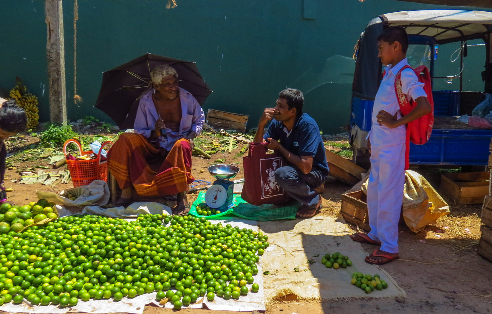

Negombo has a rich and diverse history shaped by its coastal location and long-standing connection with trade, fishing, and maritime activities. The city experienced the influence of the Portuguese, Dutch, and British colonial periods, which can still be seen in its architecture, religious buildings, roads, and waterways.Portuguese influence contributed strongly to the development of Catholicism, and Negombo became known as one of Sri Lanka's important Catholic centres. Historic churches, religious festivals, and Catholic communities remain significant parts of the city's cultural identity. The Dutch period introduced important infrastructure, particularly the Dutch Canal, which was historically used to transport goods and connect coastal settlements.During the British period, Negombo continued to develop as an important commercial and transport centre. Alongside its colonial heritage, traditional fishing remains a major part of Negombo's identity. Fishing communities, traditional boats, the fish market, and the coastal landscape represent the city's strong relationship with the sea.
Culture & Community
The people who make Negombo unique
⛪
Religious Heritage

Churches and religious landmarks contribute strongly to the cultural identity of the city.
🎣
Fishing Culture
.jpg)
Traditional fishing remains an important part of Negombo's community and economy.
🍛
Local Lifestyle

Seafood, markets, festivals and everyday street life create a distinctive local character.